Estranged Stars
A three-minute musical animation, staged across a panoramic wall of screens: two friends share a tranquil time, then drift apart, until every memory dissolves into a single cup of sake.
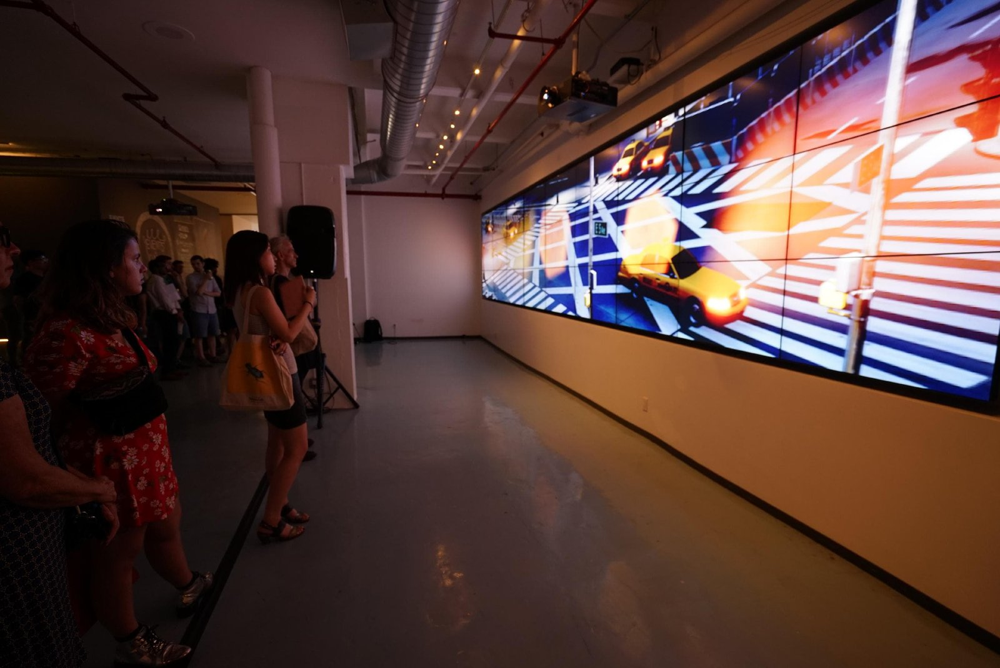
Overview
Estranged Stars is a three-minute musical animation, drawn from the Tang Dynasty poem Meeting With an Old Friend by Du Fu: staged not as a screening but as an immersive, big-screen show that wraps the audience in the image.
The title refers to the constellations Shen (参, Orion) and Shang (商, Antares), which never appear in the sky at the same time. The story follows two close friends who share a tranquil, happy stretch of life and then part ways. The animation leans on metaphor to carry the feeling, until all the memories disappear into a cup of sake.
"My heart has passed thousands of miles from the past, back to the wide, wide world."
Estranged Stars: the three-minute film.
Inspiration & concept
Everyone carries cherished memories or feelings that can't be shared. In other people's eyes you are just drinking a cup of sake, but no one sees that your heart has traveled thousands of miles into your splendid memory. And after the sake is gone, your heart still has to come back to this wide, wide world, ignoring all the emptiness and loneliness.
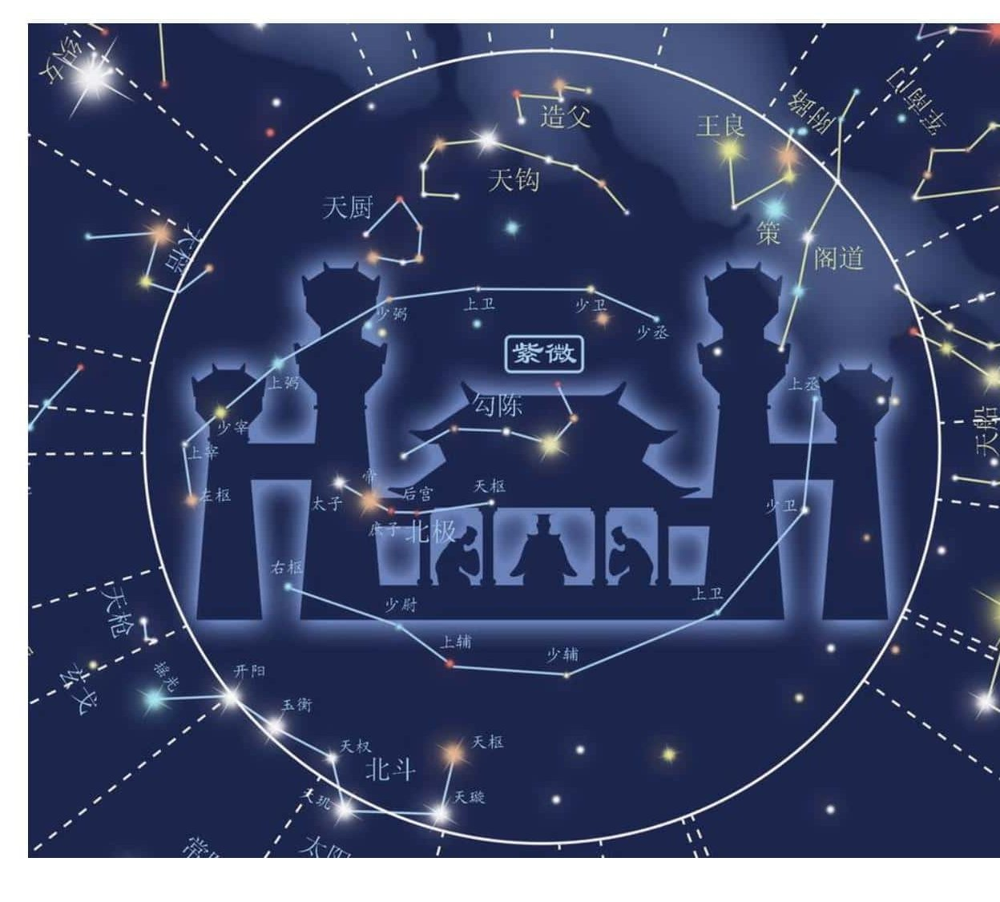
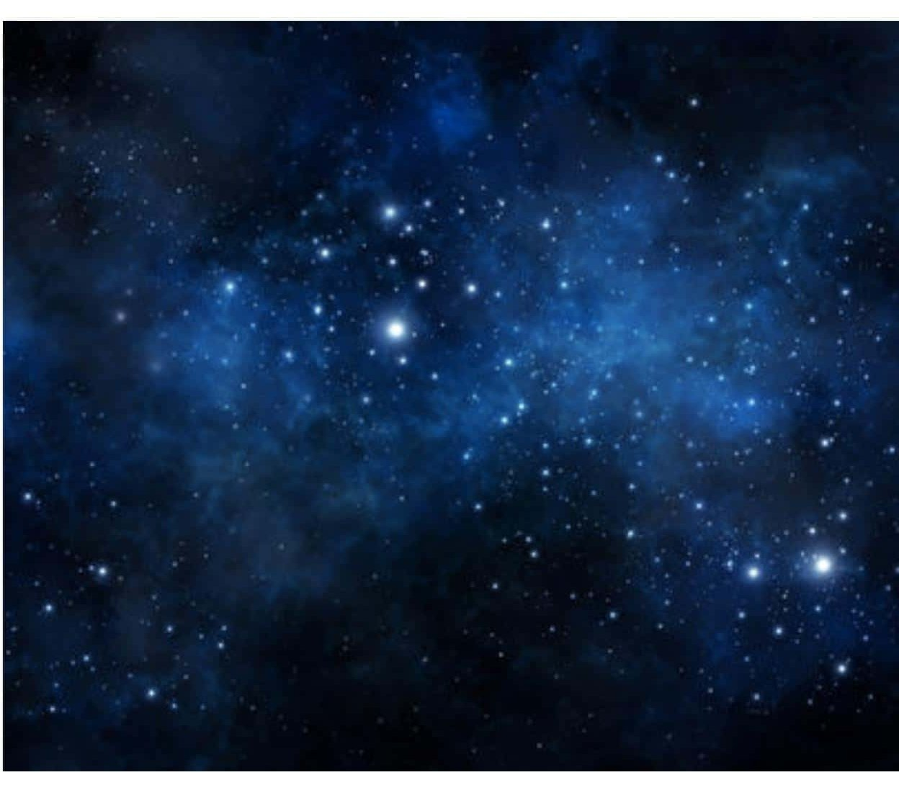
Shen (参, Orion) and Shang (商, Antares) are two constellations that never appear at the same time: in classical Chinese literature, they stand as a metaphor for separation.
Meeting With an Old Friend · Du Fu赠卫八处士 · 唐 · 杜甫
In life, friends seldom are brought near; like stars, each one shines in its sphere.
人生不相见，动如参与商。
Tonight, oh! what a happy night! We sit beneath the same lamplight.
今夕复何夕，共此灯烛光。
Our youth and strength last but a day. You and I, ah! our hairs are grey.
少壮能几时？鬓发各已苍！
Friends! half are in a better land. With tears we grasp each other's hand.
访旧半为鬼，惊呼热中肠。
Twenty more years, short after all, I once again ascend your hall.
焉知二十载，重上君子堂。
When we met, you had not a wife; now you have children, such is life!
昔别君未婚，儿女忽成行。
Beaming, they greet their father's chum; they ask me from where I have come.
怡然敬父执，问我来何方。
Before our say, we each have said, the table is already laid.
问答乃未已，驱儿罗酒浆。
Fresh salads from the garden near, rice mixed with millet, frugal cheer.
夜雨剪春韭，新炊间黄粱。
When shall we meet? it is hard to know. And so let the wine freely flow.
主称会面难，一举累十觞。
This wine, I know, will do no harm. My old friend's welcome is so warm.
十觞亦不醉，感子故意长。
Tomorrow I go, to be whirled again into the wide, wide world.
明日隔山岳，世事两茫茫。
Designing for the wall
The "big screen" is the whole point, and the whole problem.
The piece premiered on an extraordinarily wide panoramic wall, far wider than any ordinary frame. Almost no footage fits a ratio that extreme: making something that could actually fill it, edge to edge, was the real challenge every artist in the show had to solve.
So instead of fighting the format, I designed the story around it. I looked for subjects that are naturally long and horizontal: a sushi-bar counter, the keys of a grand piano, a subway sliding past a platform, a starry night stretched across the sky. Each one spans the full width while still carrying a beat of the story. The wide scenes came first; I wrote the narrative to connect them.
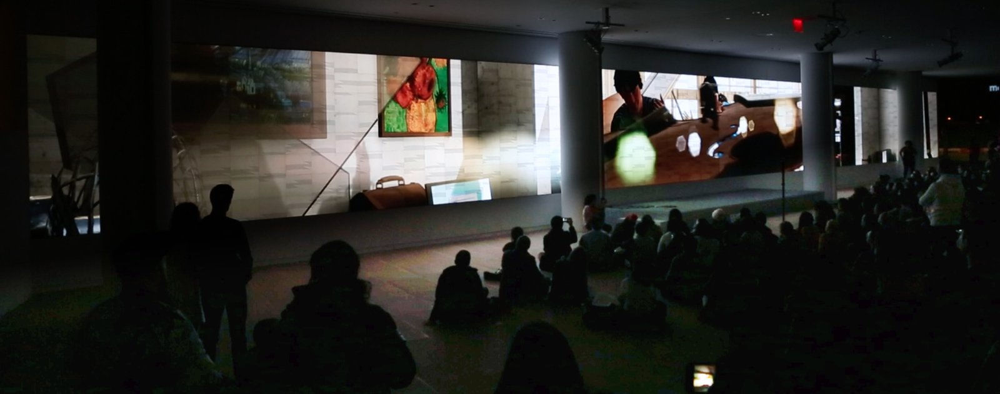
Storyboard
Ten pages of shots: every scene composed to run the full width of the wall.
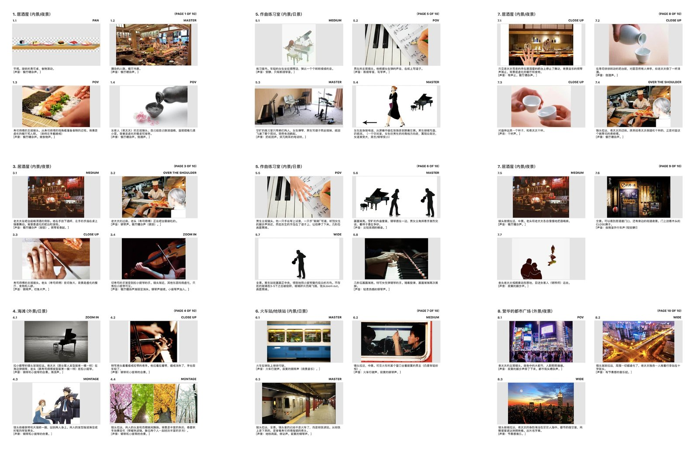
In the engine
Scenes built and lit in Unreal: poppy field, grassland, two interiors, the metro platform, the neon crossroads.
3D pipeline
Real performers scanned and motion-captured, rigged in Mixamo, then staged and rendered in Unreal Engine.
3D scanning
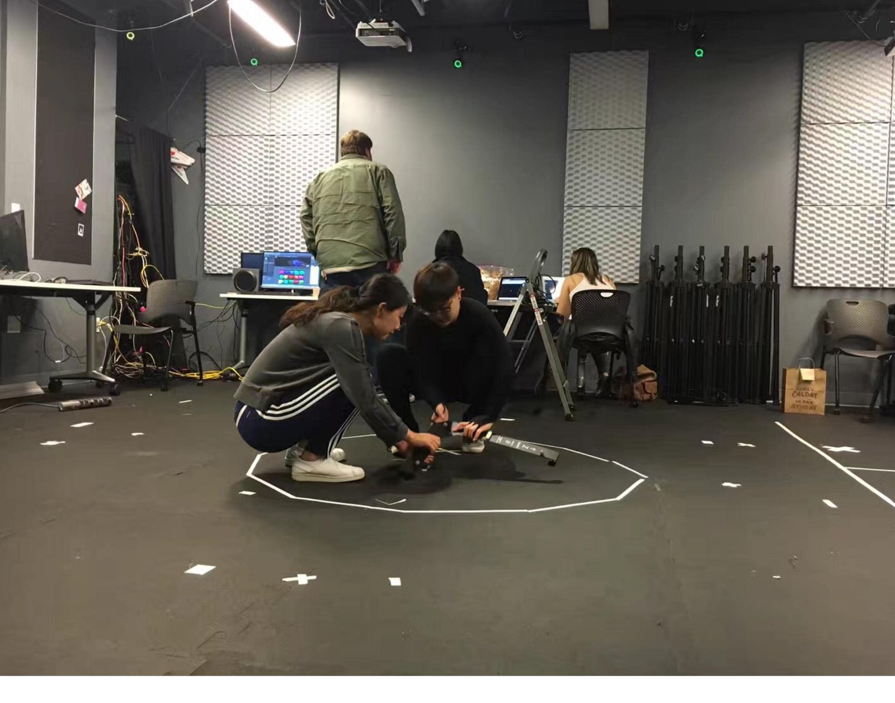
Motion capture
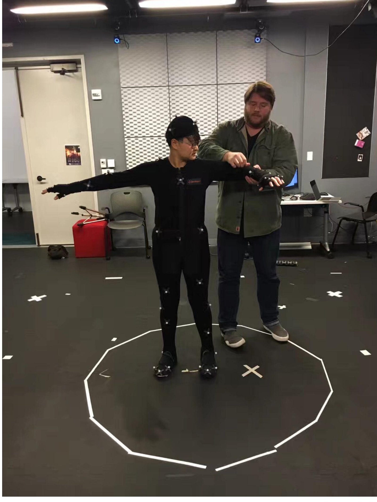
Unreal Engine
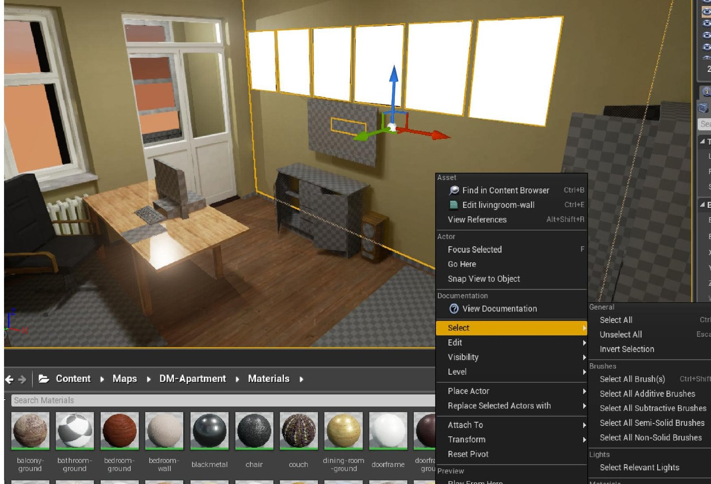
Stills
The film moves through the seasons: izakaya, poppy field, autumn forest, snow, the subway, the city at night.
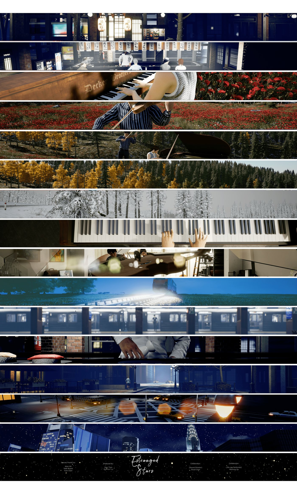
Exhibitions
ITP 2017 Big Screen Show
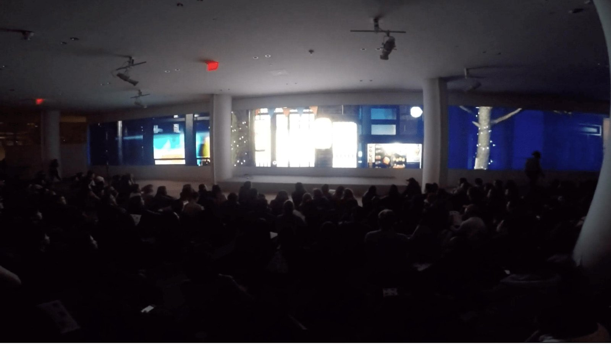
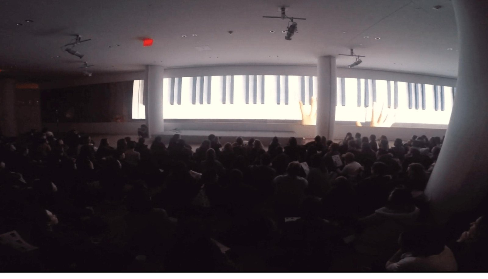
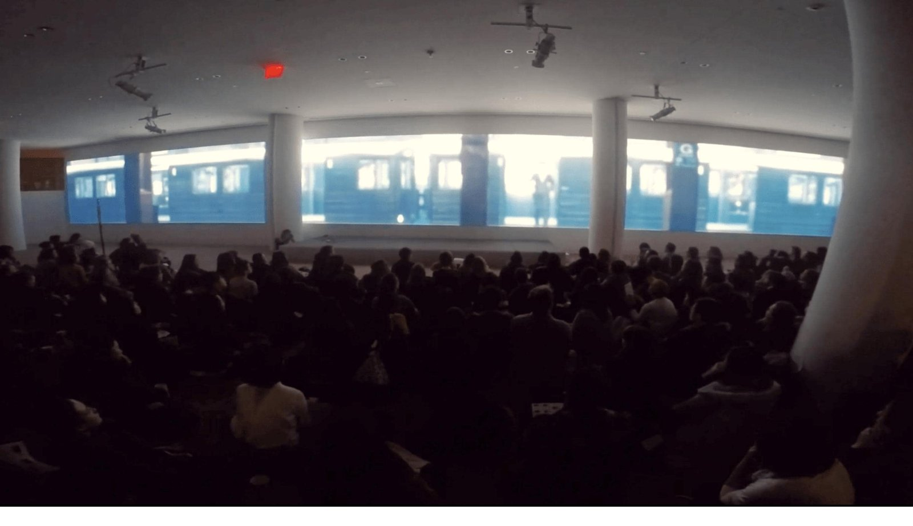
Expanded Cinema, Vol. 3
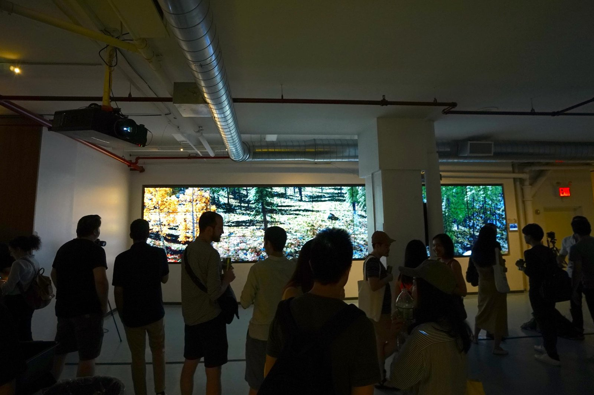
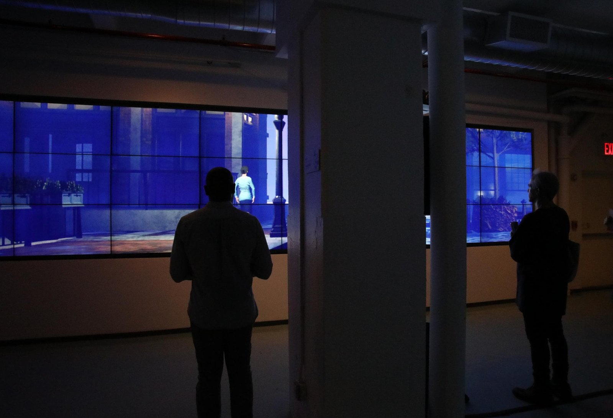
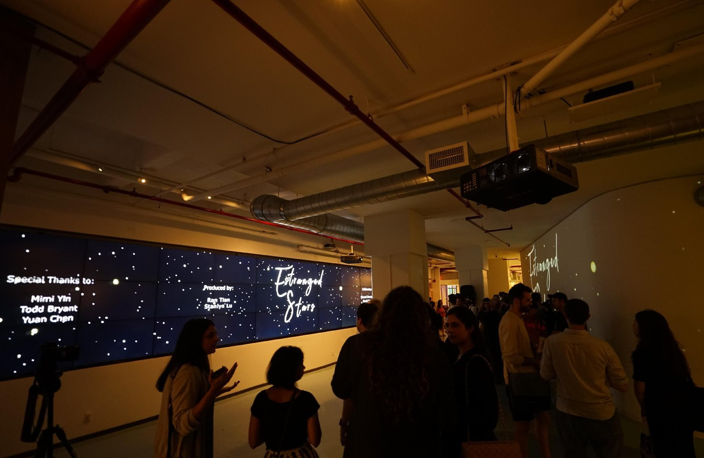
Documentation
Captured in the room: a 360° camera best conveys how the piece wraps around the audience.
Estranged Stars: 360° camera documentation. Watch the GoPro walkthrough →